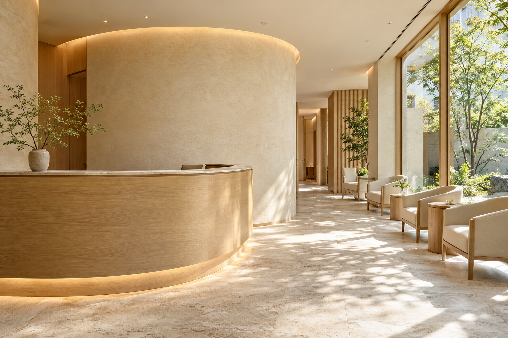

BEFORE YOUR VISIT
気になることを、選ぶ。
お口の気がかり、定期的なケア、見た目のご相談。うまく言葉にできなくても大丈夫。予約画面では「まずは相談したい」から選べる設計です。
予約デモを体験する ↗YOUR FIRST VISIT
何を聞かれるんだろう。すぐに治療が始まるのかな。
そんな気がかりを減らすために、
初診の流れを、ひとつずつ。

以下は提案用の体験設計です。実際の医院の診療方針・運用を示すものではありません。
BEFORE YOUR VISIT
お口の気がかり、定期的なケア、見た目のご相談。うまく言葉にできなくても大丈夫。予約画面では「まずは相談したい」から選べる設計です。
予約デモを体験する ↗LISTENING FIRST
気になることや、不安に感じていること。これまでの通院で気になったこと。相談の時間を大切にする体験を想定しています。
UNDERSTANDING
必要な確認や検査の内容を説明し、状態を共有するステップです。検査や診療の内容は、実際には歯科医師が状態に応じて判断します。
CHOOSING TOGETHER
選択肢や費用、通院の見通しを確認しながら、ご自身が納得できる進め方を相談する場を設ける想定です。